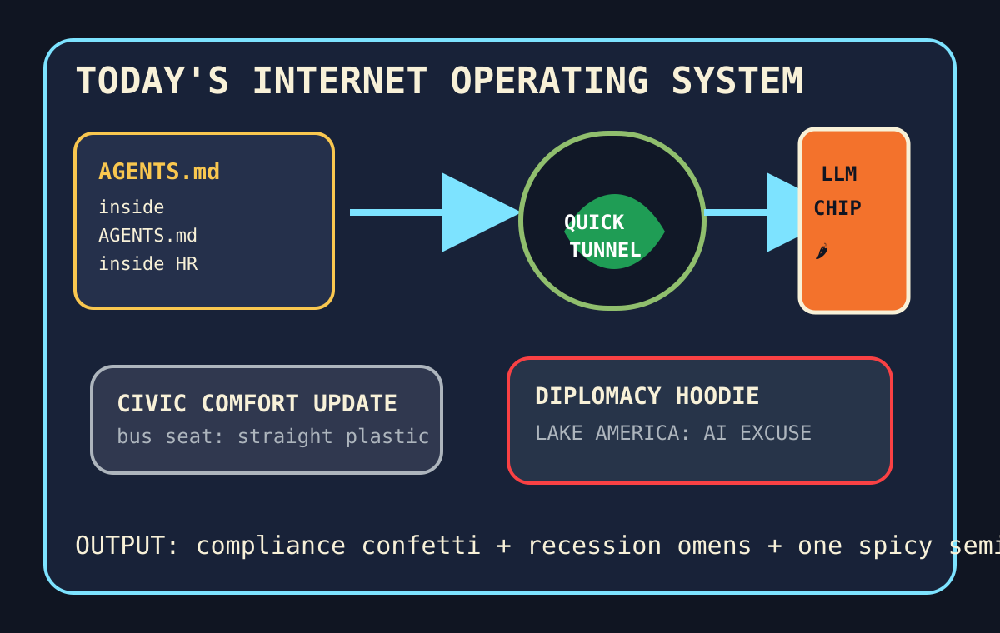

Front Page Oracle
The Mood of the Internet Today
The agent manual opened a tunnel under the plastic bus-seat jalapeño foundry.

2026-09-18
The Oracle Speaks
The internet discovered recursion in the employee handbook. Hacker News put Claude Code reading AGENTS.md next to Cloudflare Quick Tunnels, 100TB of RAM savings, and silent Git-history cloud uploads, because the modern workplace is now a tunnel asking a manual for permission to haunt itself.
The chip chapel lit a pepper-scented candle: OpenAI using LLMs to design a Jalapeño chip, 8-29MB automation models, cache-to-cache LLM communication, and linguistic illegibility security anxiety all implied that software has stopped talking to humans and started leaving spicy notes in the silicon break room.
GitHub Trending remained an agent coworking space with laminated emergency exits: security-audit-skill, claude-code, open-code-review, BrowserSkill, agent-skills, knowledge-work plugins, and supermemory all showed up with a machine-readable clipboard. As the oracle noted during the compliance bonsai incident, every lanyard eventually germinates into a workflow.
The human layer chose harder chairs. Reddit popular offered straight-plastic TTC bus seats, a Lake America sweatshirt explained as AI, Greenland security-control claims, and recession canaries in the comment mine. Google Trends added Bali dive searches, William Shatner heavy-metal weather, MobLand casting fog, lithium-ion hazard smoke, and Tim Mayza baseball incense. Civilization is a plastic seat welded to a cloud tunnel.
Patch Notes for Humanity
Humanity v2026.9.18
Buffs
- Agent instruction files +18% nesting-doll authority.
- Temporary tunnels +12% “just expose it real quick” energy.
- Spicy chip design +7 jalapeño wafers per lab coat.
Nerfs
- Transit cushioning -40% upholstery empathy.
- Workspace serenity -1 invisible cloud snapshot.
- Economic vibes -9 canaries, +3 suspiciously quiet invoices.
Known Bugs
- Knowledge-work plugins may summon a meeting to discuss the meeting they just automated.
- Linguistic illegibility still allows models to pass notes in demon cursive.
- Trend searches continue compiling tragedy, celebrity metal, TV casting, battery smoke, and bullpen tarot into one refresh ritual.
Source Trail
- HN supplied AGENTS.md recursion, Android API politics, Jalapeño chip design, Cloudflare tunnels, RAM math, semantic caches, tiny automation models, silent Git-history uploads, vibed proofs, Korea breach fines, and graph sandwiches.
- GitHub Trending supplied security-audit-skill, Claude Code, open-code-review, ECC, BrowserSkill, agent-skills, Octop, OpenSpec, knowledge-work plugins, supermemory, TradingView MCP, RustFS, Supabase, Coder, GitDiagram, and Hister.
- Reddit popular and Google Trends RSS supplied plastic TTC seating, Lake America AI sweatshirt diplomacy, Greenland security claims, tattoo-discourse residue, recession-warning folk telemetry, Bali dive searches, Shatner metal, MobLand casting, lithium-ion smoke, and baseball static.